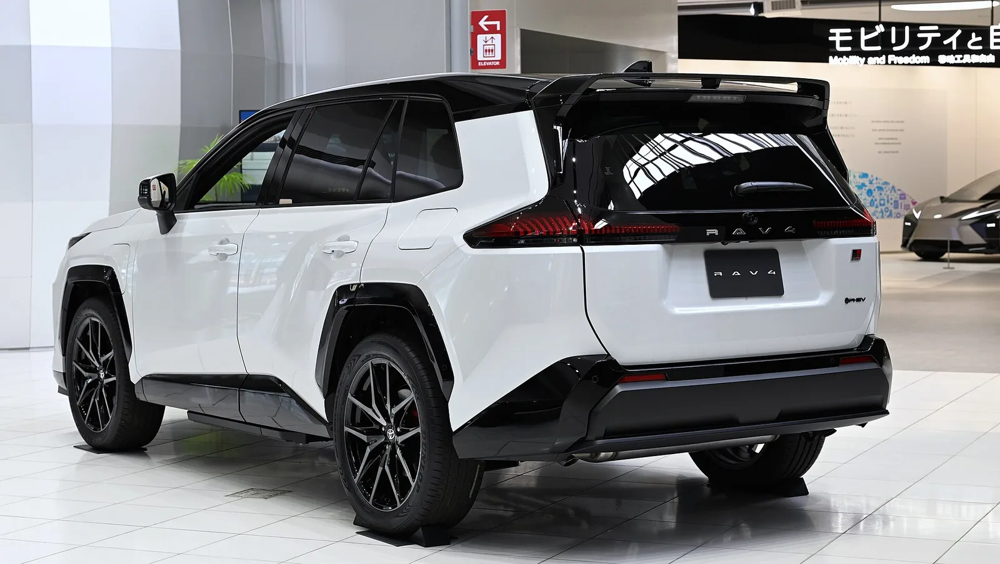

▲ RAV4 GR SPORT. 출력보다 차체와 하체에 손을 댔다 ⓒ Wikimedia Commons
고성능 트림에서 가장 먼저 보는 숫자는 출력입니다. RAV4 GR SPORT는 329마력입니다.
그런데 이 차에서 실제로 손을 댄 곳은 엔진이 아닙니다.
차체 비틀림 강성 10% 향상, A필러와 서스펜션 타워 연결 구조 강화, 개당 2.2kg 가벼운 휠. 전부 움직임에 관한 항목입니다.
1. 파워트레인부터
| 엔진 | 2.5L 직렬 4기통 가솔린 |
|---|---|
| 모터 | 고출력 전기모터 |
| 배터리 | 22.68kWh 리튬이온 |
| 시스템 총출력 | 329마력(PS) |
| EV 주행거리 | 최대 77km |
| 급속충전 | 50kW급, 10~80% 약 35분 |
22.68kWh는 플러그인 하이브리드로서는 큰 편입니다. 국내에서 흔한 PHEV의 배터리는 10~15kWh 수준입니다.
EV 모드 77km라는 숫자가 여기서 나옵니다. 국내 평균 일일 주행거리를 감안하면, 평일 출퇴근은 대부분 전기만으로 소화할 수 있는 범위입니다.
50kW 급속충전이 들어간 점도 눈여겨볼 항목입니다. PHEV는 배터리가 작아 완속만 지원하는 경우가 많습니다. 급속을 넣었다는 것은 전기 주행을 실제로 쓰라는 설계입니다.
2. 강성 10%가 무엇을 바꾸나
차체 비틀림 강성은 자동차가 코너에서 얼마나 '비틀리지 않는가'를 뜻합니다.
| 단계 | 현상 |
|---|---|
| 1 | 코너 진입 — 서스펜션이 하중을 받는다 |
| 2 | 차체가 미세하게 비틀린다 |
| 3 | 서스펜션 지오메트리가 설계값에서 벗어난다 |
| 4 | 운전자가 의도한 만큼 돌지 않는다 |
서스펜션은 단단한 바닥 위에 붙어 있을 때만 계산대로 작동합니다. 차체가 흐물거리면 아무리 좋은 댐퍼를 넣어도 그만큼의 값을 못 냅니다.
그래서 고성능 트림은 서스펜션보다 차체를 먼저 손봅니다. A필러와 서스펜션 타워를 잇는 구조 강화가 대표적입니다. 앞바퀴에서 올라온 힘이 차체 전체로 분산되도록 만드는 작업입니다.

▲ 리어 서스펜션 보강 파츠가 고속 코너링에서 차체를 지지한다
3. 퍼포먼스 댐퍼라는 부품
프런트 퍼포먼스 댐퍼는 일반적인 서스펜션 댐퍼와 다른 물건입니다.
| 구분 | 위치 | 흡수 대상 |
|---|---|---|
| 서스펜션 댐퍼(쇼크업소버) | 바퀴와 차체 사이 | 노면 요철 |
| 퍼포먼스 댐퍼 | 차체 구조물 사이 | 차체 자체의 미세 진동·뒤틀림 |
차체는 완전한 강체가 아닙니다. 주행 중 아주 작게 떨리고 비틀립니다. 퍼포먼스 댐퍼는 이 미세한 움직임을 열로 바꿔 없앱니다.
효과는 숫자로 잘 드러나지 않습니다. 랩타임이 확 줄지는 않습니다. 대신 조향 입력에 대한 반응이 또렷해지고 노면 정보가 정리돼 전달됩니다.
4. 개당 2.2kg이라는 숫자
20인치 경량 알로이 휠이 개당 약 2.2kg 가볍습니다. 네 개면 8.8kg입니다.
차 전체로 보면 크지 않은 숫자입니다. 성인 한 명이 안 탄 정도입니다. 그런데 휠의 무게는 다른 부위의 무게와 성격이 다릅니다.
| 구분 | 해당 부위 | 영향 |
|---|---|---|
| 스프렁 매스 | 차체·엔진·탑승자 | 가속·연비 |
| 언스프렁 매스 | 휠·타이어·브레이크·서스펜션 하부 | 노면 추종성·승차감·조향 반응 |
언스프렁 매스 1kg은 스프렁 매스 여러 kg에 해당하는 효과를 낸다는 것이 통설입니다. 서스펜션이 위아래로 움직일 때마다 이 무게를 가속·감속시켜야 하기 때문입니다.
가벼운 휠은 요철을 지날 때 바퀴가 더 빨리 내려와 노면에 붙습니다. 접지 시간이 길어지고 승차감도 개선됩니다. 게다가 회전 관성이 줄어 조향 반응도 가벼워집니다.

▲ 22.68kWh 배터리와 고출력 모터로 시스템 총출력 329마력을 낸다
5. GR이 붙는다는 것
GR은 토요타의 모터스포츠 브랜드 가주 레이싱(GAZOO Racing)입니다. 등급이 나뉩니다.
| 등급 | 성격 | 예 |
|---|---|---|
| GR | 전용 개발 고성능 | GR 야리스, GR 수프라, GR 코롤라 |
| GR SPORT | 양산차 기반 주행 강화 | RAV4 GR SPORT |
| GR PARTS | 순정 튜닝 부품 | — |
RAV4 GR SPORT는 두 번째입니다. 엔진을 바꾸는 것이 아니라 차체와 하체를 다듬는 등급입니다. 이번에 공개된 사양 목록이 정확히 그 성격을 보여줍니다.
국내 출시 일정과 가격은 이번 발표에 포함되지 않았습니다. 다만 "월 30만 원대 납입금" 금융 프로그램이 함께 언급됐습니다.

▲ GR SPORT는 엔진이 아니라 차체와 하체를 다듬는 등급이다
6. 정리
RAV4 GR SPORT는 2.5L 엔진과 22.68kWh 배터리로 시스템 총출력 329마력을 냅니다. EV 주행은 최대 77km, 50kW 급속으로 10~80% 약 35분입니다.
핵심은 출력이 아니라 구조입니다. 차체 비틀림 강성을 10% 높이고 A필러와 서스펜션 타워 연결 구조를 강화했으며, 프런트 퍼포먼스 댐퍼와 리어 서스펜션 보강 파츠를 넣었습니다.
20인치 경량 휠은 개당 약 2.2kg 가볍습니다. 언스프렁 매스 감량이라 체감 효과가 무게 숫자보다 큽니다. 국내 출시일과 가격은 아직 공개되지 않았습니다.